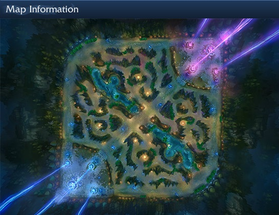

The middle lane is the most important lane in League of Legends. It is so important because it is the shortest lane between the two nexuses.If you can secure mid-lane for your team, you are securing a direct route into the enemy base, as well as a prominent lane for ganking.
As you can see, the middle lane gives you better access to the enemy's jungle, as well as the ability to counteract to enemies invading on your jungle. The key to this game is positioning, and by having a secure hold on mid-lane you are in a better command of how quickly your team can assume their battle positions. You can also dictate control over the global objectives of the Dragon and Baron pits. Maintaining control over the middle lane will provide your team with many benefits, and will increase your overall chance of victory.
One of the most helpful things you can learn to greatly improve your performance, is to always be aware of the map. Map awareness is what makes or breaks any given lane, with the middle lane being the most difficult to be fully aware of. If you are playing mid-lane, you need to be aware of potential ganks from both sides of the river, as well as the ganks from above or below the river ramps. This brings us to the most important item of the game:
Sight Wards!
This item will give you vision of a location on the map for a full three minutes. This will protect you from ganks, let you know when you can push a lane, allows you to alert your team about enemy roamers and can even spot global ultimates heading to your teammates. The benefits this item bestows is just too valuable to a team, and you would be silly not to take advantage of them. If you return to base, and have at least 75g left after you have finished making your purchases, then you need to buy a ward.
Now you may be saying to yourself, "Why should I play the mid-lane? It seems like it's too much work and entirely too stressful." Well you're partly right. The mid-lane is a lot of work, but with proper preparation and practice you'll be able to secure it for your team and march right up to the enemy nexus. You should play this lane if you want to be a hero to your team, and and a bane to the enemy. You should play this lane, if you want to help your team secure objectives and disrupt the enemy jungle. As previously stated the shortest route to the enemy base is right up the middle lane, and the team who secures it generally tends to win more games.
So if you're ready, the characters page has a list of easy to complex difficulty characters to play, to start getting you some experience in the middle lane.
{kind=link}
{kind=link}